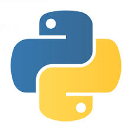

Informatica
Op deze pagina hebben we het over zuivere ICT programma's.
De lokale kopies van de programma's kan je hier vinden.
Naam: Notepad ++
Categorie: editor
Waardeoordeel: 5
Waardeoordeel op een schaal van 5 .. 1 (5='need to have', 3='good
to have', 1='nice to have')
Beschrijving: Dit programma is zeer interessant om programma's in te typen. Het is een krachtiger versie van het standaard kladblok programma van Windows.
Naam: Python
Categorie: ict en programmeren
Waardeoordeel: 5
Waardeoordeel op een schaal van 5 .. 1 (5='need to have', 3='good
to have', 1='nice to have')
Beschrijving: Python (met IDLE) is een eenvoudige programmeeromgeving. Python is een interpreter, men moet dus niet compileren.
Naam: Java Development Kit en Java Runtime Environment
Development Kit en Java Runtime Environment
Categorie: ict en programmeren
Waardeoordeel: 5
Waardeoordeel op een schaal van 5 .. 1 (5='need to have', 3='good
to have', 1='nice to have')
Java Development Kit:
Download van internet - geen lokale kopies omdat ze te frequent
veranderen. Bovendien: als je BlueJ gebruikt, kan je een versie
daarvan downloaden met de JDK inbegrepen.
Java Runtime Environment:
Download van internet
Beschrijving: JDK of Java Development Kit heb je
nodig in de eerste drie semesters van de opleiding om in combinatie
met BlueJ eigen programma's te kunnen schrijven (zelf programmeren).
Je hebt de webapplicatieversie (EE) niet nodig.
Java Runtime Environment heb je nodig voor een aantal toepassingen
die je kan installeren.
Naam: BlueJ
Categorie: ict en programmeren
Waardeoordeel: 5
Waardeoordeel op een schaal van 5 .. 1 (5='need to have', 3='good
to have', 1='nice to have')
Beschrijving: BlueJ is een eenvoudige programmeeromgeving voor wie in Java wil programmeren (editor, debugger, ...) Installeer eerst de JDK en dan pas BlueJ of nog beter ineens de gecombineerde versie mét JDK. BlueJ is slechts 8MB groot. BlueJ volstaat zeker voor de opleiding! De nieuwste versie weliswaar is al 230MB groot, met de Java Development Kit inbegrepen)
Naam: Dev C++
Categorie: ict en programmeren
Waardeoordeel: 5
Waardeoordeel op een schaal van 5 .. 1 (5='need to have', 3='good
to have', 1='nice to have')
Overzicht
releases
Download
van internet via Orwell link (bevat versie 5.11)
Download
van internet
Beschrijving: Dev C++ is een eenvoudige programmeeromgeving voor C en C++ programmatie. Je hebt dit nodig vanaf het vierde semester (tweede helft tweede bachelorjaar) in de elektronica-ICT opleiding. Met de 64 bit versie kan je ook naar 32 bit code laten compileren.
Naam: Microsoft Visual C++
Categorie: ict en programmeren
Waardeoordeel: 5
Waardeoordeel op een schaal van 5 .. 1 (5='need to have', 3='good
to have', 1='nice to have')
Beschrijving: Microsoft is een programmeeromgeving
voor C en C++. Het is veel groter dan Dev C++. Je kan dit gebruiken
vanaf het vierde semester (tweede helft tweede bachelorjaar)
in de elektronica-ICT opleiding. We voorzien geen lokale kopie
omdat die erg afhankelijk is van je huidige installatie. In de
installatieprocedure wordt de juiste software extra gedownload
en geïnstalleerd.
Naam: StarUML
Categorie: ict
Waardeoordeel: 3
Waardeoordeel op een schaal van 5 .. 1 (5='need to have', 3='good
to have', 1='nice to have')
Beschrijving: StarUML is zeer interessant voor het OPO 'software engineering' én voor alle studenten die een UML moeten maken voor hun programmacode.